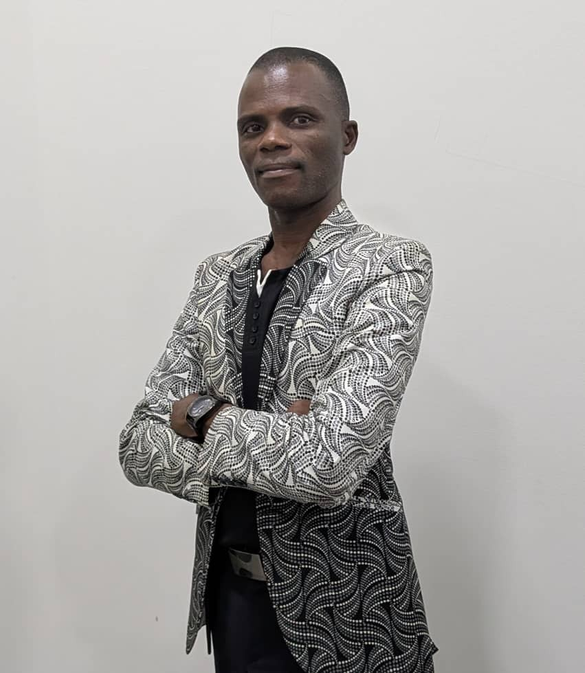

Directeur IT, Logistique et Digitalisation, je transforme les organisations logistiques multinationales par la donnée, la gouvernance IT et l'intelligence artificielle appliquée.
IT, Logistics and Documentation Director, turning multinational logistics organizations into data driven operations through BI, IT governance, and applied AI.

Cadre dirigeant fort de 20 ans d'expérience en shipping et logistique maritime, dont plus de 10 ans au sein du comité de direction de MSC Togo et MEDLOG Togo, l'un des principaux groupes mondiaux de transport conteneurisé. Reconnu pour sa capacité à générer de la croissance, piloter l'excellence opérationnelle et développer des partenariats stratégiques sur le corridor togolais, en lien direct avec Africa Global Logistics (AGL), le Lomé Container Terminal et la Plateforme Industrielle d'Adétikopé.
Capable de diriger des équipes larges et multiculturelles (19 collaborateurs directs, ~120 indirects), de gérer des cycles P&L complets, et de conduire des programmes IT, data et de transformation digitale à impact mesurable. Français natif, anglais professionnel, connaissance approfondie de l'environnement des affaires et réglementaire ouest africain.
Senior executive with 20 years of leadership in liner shipping and maritime logistics, including 10+ years as a member of the management body at MSC Togo and MEDLOG Togo, one of the world's leading container shipping groups. Recognized for driving revenue growth, operational excellence, and strategic partnerships across the Togo corridor, working directly with Africa Global Logistics (AGL), Lomé Container Terminal, and the Adétikopé Industrial Platform.
Proven ability to lead large, multicultural teams (19 direct / ~120 indirect reports), manage full P&L cycles, and execute IT, data, and digital transformation programs that deliver measurable efficiency gains. Native French, professional English, deep knowledge of the West African business and regulatory environment.
Conception de tableaux de bord exécutifs, analyse de coûts de surestarie, et pilotage de projets de gouvernance de la donnée, appuyés par une pratique continue de la data science.
Design of executive dashboards, demurrage cost analysis, and data governance projects, backed by an ongoing data science practice.
Conception, réalisation et gestion du département informatique de l'École Supérieure de l'Aéronautique et des Technologies, Togo (ESAT-TOGO), incluant le site web de l'établissement.
Design, build, and IT department management for the École Supérieure de l'Aéronautique et des Technologies, Togo (ESAT-TOGO), including the school's website.
esat-togo.tg ↗Pilotage de bout en bout de la migration ERP, sans rupture de continuité opérationnelle, avec renforcement de la gouvernance des données.
End to end migration led without operational disruption, with strengthened data governance.
Déploiement de l'e-Bill of Lading et d'une plateforme de pré-validation documentaire, avec automatisation des API bancaires.
Rollout of e-Bill of Lading and a document pre-validation platform, with banking API automation.
Conception de tableaux de bord et d'analyses mensuelles de coûts de surestarie destinés au comité de direction.
Dashboards and monthly demurrage cost analyses built for board level decision making.
Projet de recherche appliqué, ancré dans le terrain opérationnel de MSC & MEDLOG, articulant transformation digitale, performance financière et intelligence artificielle dans les organisations logistiques multinationales. L'IA y est traitée non comme un thème périphérique, mais comme une composante centrale du modèle étudié.
An applied research project grounded in MSC & MEDLOG's operational terrain, linking digital transformation, financial performance, and artificial intelligence in multinational logistics organizations. AI is treated as a core component of the model, not a peripheral theme.